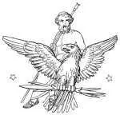
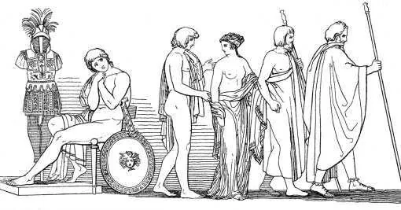

La IlíadaPrimeras páginas
LA ILÍADA
HOMERO
LA ILÍADA
VERSIÓN DIRECTA Y LITERAL DEL GRIEGO
POR
LUIS SEGALÁ Y ESTALELLA
DOCTOR EN FILOSOFÍA Y LETRAS Y EN DERECHO, CATEDRÁTICO NUMERARIO
DE LENGUA Y LITERATURA GRIEGAS EN LA UNIVERSIDAD DE BARCELONA, É INDIVIDUO
CORRESPONDIENTE DE LA REAL ACADEMIA DE BUENAS LETRAS DE LA MISMA CAPITAL
ilustraciones de FLAXMAN y del profesor A. J. CHURCH

BARCELONA
MONTANER Y SIMÓN, EDITORES
CALLE DE ARAGÓN, NÚM. 255
1908
ES PROPIEDAD
AL LECTOR
No sin temor pongo en tus manos esta versión en prosa del inmortal poema homérico compuesto hace treinta siglos y no superado aún por otro alguno; epopeya sin par y cuadro fiel de los orígenes históricos de aquella cultura helénica que tanto influyó en la romana, y más tarde, ya directamente, ya por medio de esta última, en la de casi todos los pueblos civilizados.
Sabido es que la Ilíada tiene por asunto un episodio de la guerra de Troya, ocurrido en el noveno año de la misma; y que se atribuye á Homero, el padre de la poesía, el célebre aedo que recorría la Grecia cantando al son de la cítara sus propias composiciones. No es posible hablar en estas pocas líneas de la llamada cuestión homérica, ni resumir lo que han dicho los críticos sobre la existencia y la patria de Homero, las obras que compuso y el estado en que han llegado hasta nosotros. Por tanto, sólo manifestaré las razones que me impulsaron á hacer esta versión literal del más famoso de sus poemas.
De la Ilíada se han publicado en España tres traducciones: las de D. Ignacio García Malo, D. José Gómez Hermosilla y D. Conrado Roure; pues la notabilísima que preparaba D. Juan Montserrat y Archs no llegó á ver la luz pública. Las dos primeras son dignas de elogio por el conocimiento que de la obra original revelan en sus autores, y la de Hermosilla también por su valor literario, mucho mayor de lo que generalmente se cree, como ha demostrado mi insigne maestro D. Marcelino Menéndez y Pelayo; pero ambas están en verso y no pueden ser tan fieles, que no amplifiquen, mutilen ó alteren el texto para acomodarlo á la forma métrica. De aquí que no satisfagan completamente á quien, sin estar impuesto en la lengua griega, necesite conocer la Ilíada en sus menores detalles, le convenga alegar textualmente algunos de sus versos ó quiera verificar las citas que se hagan de dicho poema. En cuanto á la traducción de D. Conrado Roure, muy estimable en algunos pasajes por su fidelidad, como está escrita en catalán, sólo pueden utilizarla los que conocen esta lengua.
Para salvar tales inconvenientes se publica la presente versión literal en prosa castellana; y puedo asegurarte que si el buen deseo, el entusiasmo por la obra y la diligencia en el trabajo bastaran para tener acierto, no habría otra que fuese más perfecta y acabada.
Dice Fr. Luis de León que «el que traslada ha de ser fiel y cabal, y si fuere posible, contar las palabras, para dar otras tantas, y no más, de la misma manera, cualidad, y condición y variedad de significaciones que las originales tienen, sin limitallas á su propio sonido y parecer, para que los que leyeren la traducción puedan entender la variedad toda de sentidos á que da ocasión el original si se leyese, y queden libres para escoger de ellos el que mejor les pareciere.» Tomando por regla tan autorizada opinión y poniendo en práctica los consejos que el malogrado helenista Dr. D. José Balari, eximio catedrático que fué de esta Universidad, nos daba á los que tuvimos la suerte de ser sus discípulos, he traducido el poema literalmente, sin quitar nada, ni siquiera un epíteto, y sin añadir más que lo necesario para la recta inteligencia de la frase, dada la distinta índole de la lengua castellana con respecto á la griega. No he vacilado en emplear una palabra anticuada cuando con ella se expresaba bien la idea del vocablo original: por ejemplo, la voz escudado, que tiene el mismo valor de la griega ἀσπιστής. Como no conozco ninguna dicción española que equivalga á εὐρύοπα, epíteto de Jove, en su acepción más probable de el de amplia mirada, me atreví á formar el compuesto longividente, cuya segunda parte se usa en las voces omnividente y providente, y la primera fué empleada por el clásico Jarque en la palabra longispicio. Algo perplejo me tuvo el substantivo ἀριστεία (ΔΙΟΜΗΔΟΥΣ ΑΡΙΣΤΕΙΑ, ΑΓΑΜΕΜΝΟΝΟΣ ΑΡΙΣΤΕΙΑ, ΜΕΝΕΛΑΟΥ ΑΡΙΣΤΕΙΑ), que significa la acción de descollar en algo, es decir, de excederse un guerrero á sí mismo, sobresaliendo entre los combatientes y ejecutando sus mayores hazañas; y por fin adopté el vocablo principalía, cuyo valor etimológico es casi igual al de la voz latina, principatus, con que suele traducirse. Mayor indecisión sentí al verter el epíteto εἰλίπους, que Homero da á los bueyes, y significa, según el Lexicon de Ebeling, qui pedes oblique et in orbem fere tortos profert, y según el Thesaurus lo explica, flexipes, vertens et curvans pedes inter eundum: confieso que no he sabido hallar una palabra castellana que equivalga á la griega; pero he preferido interpretarla imperfectamente con los vocablos de tornátiles pies, á seguir el ejemplo de muchos traductores que la han suprimido por completo.
Ha servido de base para la traducción el texto griego de Dindorf-Hentze, publicado en la Bibliotheca scriptorum Graecorum et Romanorum Teubneriana; que es, en mi humilde juicio, el más depurado de todos. Para precisar el significado de las voces griegas se han consultado varios diccionarios y especialmente el Thesaurus, el notable Lexicon Homericum, que editó Ebeling y el importantísimo Dictionnaire des antiquités grecques et romaines d’après les textes et les monuments, que empezó á publicarse en 1877 bajo la dirección de MM. Ch. Daremberg y Edm. Saglio, y alcanza actualmente hasta la letra S. Para la interpretación de algunos pasajes se han tenido á la vista las traducciones latinas de C. G. Heyne y de la edición de Firmin Didot; las españolas de Lebrija, García Malo, Gómez Hermosilla y Roure; la portuguesa de Manoel Odorico Mendes; las italianas de Monti y Cesarotti; las francesas de Mme. Dacier, Bitaubé, Giguet y Leprévost; la alemana de Voss; las inglesas de Lord Derby y del célebre Pope, y la que en griego moderno ha publicado Pal-le. Finalmente, para la fijación de regímenes dudosos, para determinar la acepción y uso de algunas palabras y frases, y para evitar, en lo posible, los barbarismos, hase acudido á la primera edición del Diccionario de la Real Academia Española, conocida con el nombre de Diccionario de Autoridades, y á las excelentes obras de Baralt, Cuervo, P. Mir, P. Nonell y Cortejón.
Y ahora, lector benévolo, que ya sabes por qué y cómo se ha hecho la presente versión, perdona sus faltas, parando mientes en lo difícil que es trasladar al romance una obra antiquísima de tanto valor literario é histórico, compuesta en la más hermosa de las lenguas y nacida en un medio ambiente muy distinto del actual. Si se podía decir en la época de Virgilio: Facilius esse Herculi clavam, quam Homero versum subripere, con más razón podríamos repetirlo nosotros que nos hallamos á mayor distancia de aquellos tiempos y hablamos idiomas de carácter analítico, muy diferentes de las inmortales lenguas clásicas.
Luis Segalá y Estalella.
NOTAS
Recientemente, Mr. Bréal ha pretendido demostrar que la Ilíada fué compuesta en el siglo VII a. de J. C. (y no en el X ó XI, como suele creerse) y que su carácter de obra primitiva es efecto del arte. Véase: Michel Bréal, Pour mieux connaître Homère. París, Hachette, 1906.
Las dos escenas capitales en que se basa la unidad de la obra son las siguientes: 1.ª Aquiles disputa con Agamenón, que le arrebata la esclava Briseida, decide no volver á pelear en favor de los griegos, y obtiene, por mediación de su madre Tetis, que Júpiter proteja á los troyanos. 2.ª Habiendo muerto Patroclo, el compañero de Aquiles, á quien éste permitió que vistiese su propia armadura y echase del campamento griego á los enemigos, el héroe quiere vengarle, se reconcilia con Agamenón, interviene en el combate y mata á Héctor, el principal defensor de la ciudad sitiada. Innumerables son las bellezas que presenta el desarrollo de la acción, y todo lector se acordará de la disputa de Aquiles y Agamenón, del tierno coloquio conocido con el nombre de Despedida de Héctor y Andrómaca, del admirable discurso que Ulises dirige á Aquiles para que deponga la cólera y vuelva á combatir, de los prudentes consejos de Néstor, del engaño de Júpiter por su esposa Juno, de la descripción del escudo que Vulcano fabricó para Aquiles, de la persecución de Aquiles por el río Escamandro, de la muerte de Héctor, de la patética súplica de Príamo postrado á los pies de Aquiles, de las muchas comparaciones tomadas casi siempre de la naturaleza, de las descripciones de batallas, del carácter perfectamente delineado de cada uno de los personajes, y de tantos y tantos primores como podrían citarse de este incomparable poema.
Léase lo que han escrito acerca de la misma los historiadores de la literatura griega (Fabricius, Schoell, Ficker, Mure, Christ, Müller, Bergk, Murray, A. et M. Croiset, etc.) y la monografía: Homère, étude historique et critique, par Victor Terret. París, A. Fontemoing, 1899.
Hasta fines del siglo XVII fué unánime la opinión de que Homero había existido real y efectivamente. Á principios del XVIII, Juan B. Vico, en sus Principi di scienza nuova (Nápoles, 1725), lo consideró como una abstracción, y dijo que el cantor de la Ilíada era la voz de la Grecia, el eco de los tiempos heroicos. Federico Augusto Wolf, creyendo que la Ilíada y la Odisea revelan un arte muy adelantado y que en aquellos remotos tiempos la escritura no era de uso general, intentó probar en sus Prolegomena (publicados en 1795), que ambos poemas nacieron de la unión de varios fragmentos, recogidos y ordenados, en el siglo VI antes de J. C., por Pisístrato; y que Homero habría sido el autor de algunas rapsodias, un aedo cuya fama hizo que se perdiera la memoria de otros poetas contemporáneos suyos. Las ideas de Wolf causaron gran impresión en los eruditos, que desde entonces están discordes y pueden ser clasificados en cuatro grupos: 1.º Los que, aceptando la existencia de Homero, defienden la unidad primitiva de la Ilíada: tales son Nitzsch, Müller y Terret. 2.º Los que, como Dugas-Montbel y Lachmann, creen que dicha obra es el resultado de la unión de varias poesías ó cantos aislados. 3.º Los partidarios de una teoría intermedia, es á saber: que la Ilíada fué desde el principio un poema completo, pero mucho menos extenso que el actual; así opinan Hermann, Bergk, Christ, Grote, Guigniaut, Koechly y M. Croiset. 4.º Mr. Bréal, el cual sostiene que la epopeya homérica fué compuesta por un grupo ó corporación de poetas con el fin de que fuera recitada en los juegos y fiestas que se celebraban en la Lidia. Véase: Histoire de la Littérature grecque, par A. et M. Croiset. París, A. Fontemoing.
Las ciudades más famosas de Grecia (Esmirna, Quíos, Colofón, Pilos, Argos, Atenas, Cumas, Mileto, Micenas y otras) se disputan el honor de haber sido la patria de Homero. Algunos autores han llegado á suponer que el poeta no era griego, sino romano, sirio, egipcio, etc. Lo probable es que fuera jonio y hubiese nacido en Esmirna, ciudad del Asia Menor.
En las colecciones de autores griegos figuran con el nombre de Homero: la Ilíada, la Odisea, los Himnos, los Epigramas y la Batracomiomaquia. También se han considerado como suyos el Margites y otros poemas. Todas estas obras, á excepción del Margites, que desgraciadamente se ha perdido, están escritas en hexámetros y la que más constantemente se ha atribuído á Homero es la Ilíada; pues ya Xenón, Helánico y otros críticos de la escuela de Alejandría creyeron que la Odisea era de otro autor, llamándoseles por esta razón χωρίζοντες (separadores), y en cuanto á las demás poesías está probado que no son auténticas.
La Ilíada era cantada por los rapsodas. Pisístrato reunió en Atenas á los más célebres, mandó escribir lo que recitaban, y de esta manera se formó el texto. Los gramáticos alejandrinos dividieron el mencionado poema en XXIV cantos y empezaron á publicar ediciones críticas.—Augusto Fick supone que la Ilíada fué escrita en el dialecto eólico y luego traducida al jónico, habiéndose conservado la forma original allí donde no fué posible hallar otra forma jónica equivalente, é intenta hacer la reconstrucción del texto primitivo. (Véase: August Fick, Die Homerische Ilias, Göttingen, Vandenhoeck und Ruprecht’s Verlag, 1886.)
La Ilíada de Homero, traducida del griego en verso endecasílabo castellano por don Ignacio García Malo. En Madrid por Pantaleón Aznar, año 1788.—La Ilíada de Homero, traducida del griego al castellano por D. José Gómez Hermosilla. Madrid. En la imprenta Real, año de 1831.—Tradujeron también la Ilíada en verso castellano Juan de Lebrija Cano, el maestro Francisco Sánchez de las Brozas, Cristóbal de Mesa, el P. Manuel Aponte, D. Miguel José Moreno, D. Francisco Estrada y Campos y un anónimo. Existe en el Museo Británico una traducción en prosa castellana de los cinco primeros cantos de la Ilíada, pero no es directa, sino de la versión latina de Pedro Cándido Decimbre. Véase la noticia sobre Hermosilla y sus obras, por D. Marcelino Menéndez y Pelayo, de donde están tomados estos datos.
Ilíada, poema en XXIV cants, d’Homero, traduhit en prosa catalana per Conrat Roure. Barcelona. Estampa de Leopoldo Doménech. 1879. (Publicada en la «Biblioteca del Diari Catalá.»)
L’Ilíada d’Homer, directament traslladada de la llengua grega, per J. Montserrat y Archs. Para apreciar la fidelidad, el sabor verdaderamente homérico y el valor estético de esta traducción, así como la riqueza de notas que la justifican, basta leer el fragmento (Canto XVIII, versos 356 al 617) que se imprimió en el Anuari catalá, 1875, col·leccionat y publicat per Francesch Matheu y Fornells.—Barcelona. Estampa de L. Obradors y P. Sulé. 1874.
Fr. Luis de León.—Prólogo á la traducción literal y declaración del Libro de los Cantares de Salomón.
Εὐρύοπα. Late patentem vocem habens. Alii: late patentem visum habens, vel magnos oculos habens, vel late patens ingenium habens, i. e. mundi administrator.—Ebeling. Lexicon Homericum.
P. Juan Mir. Rebusco de voces castizas, pág. 471.
Ἀριστεία, ἡ, Egregia strenuitas, Egregiae fortitudinis specimen. Exponitur etiam Praeclarum militiae facinus. Et simpliciter Fortitudo, Strenuitas.—Thesaurus Graecae linguae.
Homeri Ilias, edidit Guilielmus Dindorf. Editio quinta correctior quam curavit C. Hentze. Lipsiae. In aedibus B. G. Teubneri. 1904 et 1907.
Θησαυρὸς τῆς Ἑλληνικῆς γλώσσης. Thesaurus Graecae linguae ab Henrico Stephano constructus, ediderunt Carolus Benedictus Hase, Guilielmus Dindorfius et Ludovicus Dindorfius.—Parisiis, excudebat Ambrosius Firmin Didot. 1865.
Lexicon Homericum composuerunt F. Albracht, C. Capelle, A. Eberhard, E. Eberhard, B. Giseke, V. H. Koch, C. Mutzbaver, Fr. Schnorr de Carolsfeld, edidit H. Ebeling.—Lipsiae. In aedibus B. G. Teubneri. 1885.
Se conserva en la Biblioteca Colombina de Sevilla. El Dr. D. Francisco Murillo, ilustrado catedrático de la Universidad hispalense, ha tenido la atención de enviarme una copia del canto VI y de varios fragmentos de los restantes.
Η ΙΛΙΑΔΑ μεταφρασμένη ἀπὸ τὸν Ἀλεξ. Πάλλη.—Παρίσι. Τυπογραφεῖο Chaponet. 1904.

Patroclo, por orden de Aquiles, saca á Briseida y la entrega á Taltibio y Euríbates
Hasta aquí las primeras páginas. Para seguir leyendo, descarga el libro completo, gratis:
¿Cuál elegir? El PDF se abre directo en el navegador, en cualquier celular o computador. El EPUB queda en Descargas y se lee con una aplicación de lectura (Google Play Libros en Android, Libros en iPhone, Kindle o Kobo), que deja agrandar la letra.